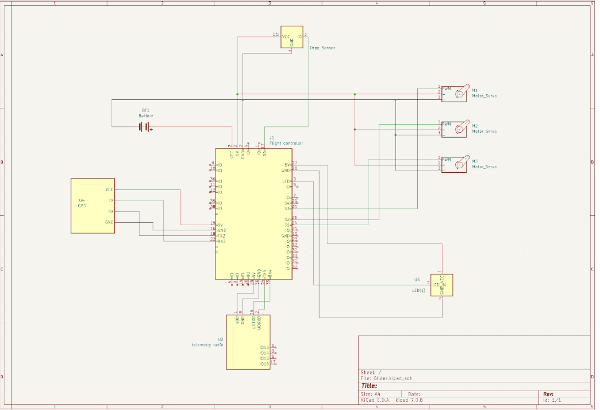
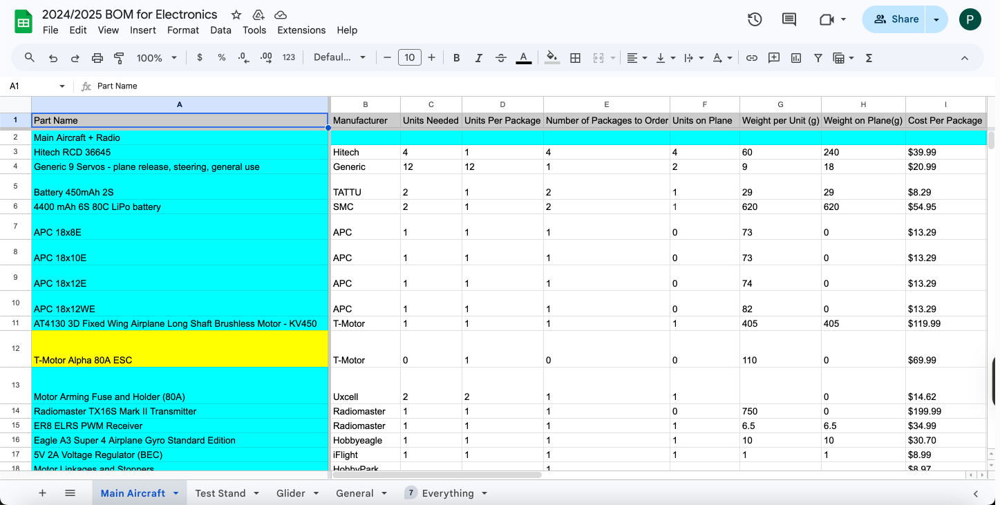
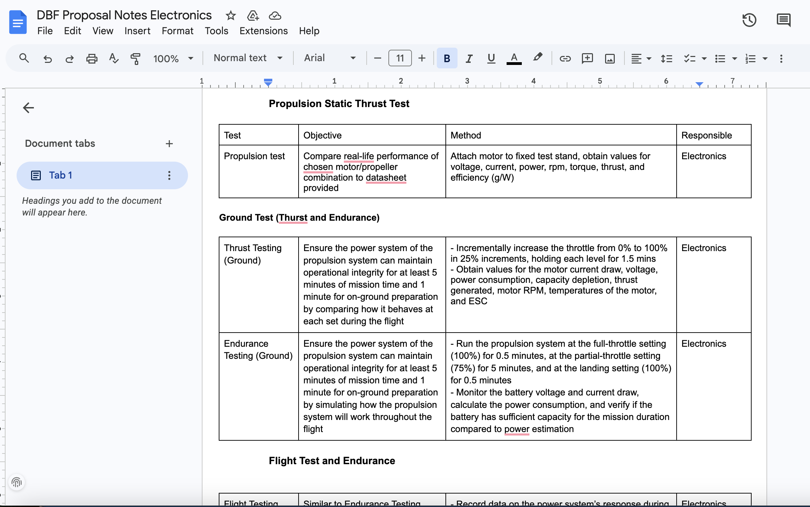
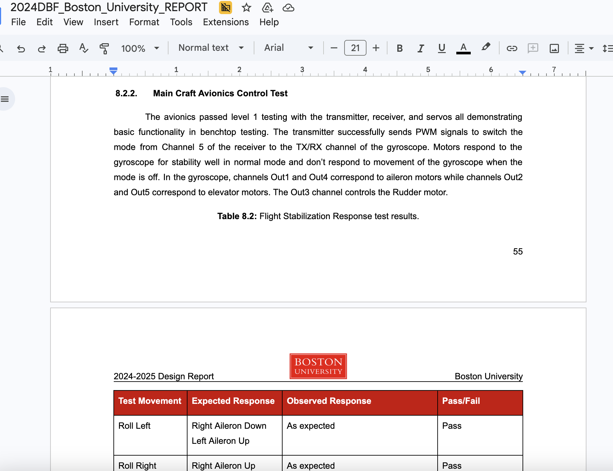

DBF Glider & Main Plane
BU AIAA Design/Build/Fly Team, Fall 2024 - Spring 2025
Project Description
This project was part of the BU AIAA Design/Build/Fly competition team. I worked on the glider and main plane as an Electronics and Propulsion Systems engineer, supporting the avionics side of the aircraft and helping the team move from design decisions to testable hardware plans.
My contributions centered on power calculations, circuit schematic development, documentation, and radio testing. It was a strong cross-disciplinary experience that connected aerospace competition goals with electrical design and hardware validation.
My Responsibilities
- Contributed to the proposal and final report for the competition season.
- Researched avionics components and documented the bill of materials.
- Performed power-system calculations and designed circuit schematics for the glider and main plane in KiCad.
- Tested radio transmitter and receiver functionality with motors.
Skills I Learned
- Power budgeting and avionics component selection.
- KiCad schematic design and hardware documentation.
- Competition engineering teamwork and technical reporting.
- Hands-on radio and propulsion-related hardware testing.
Project Links
Photos




